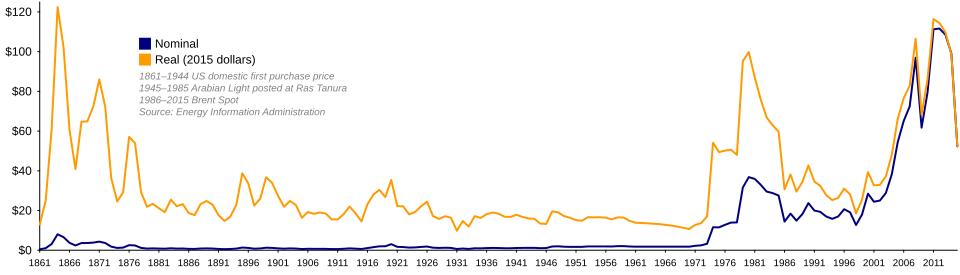
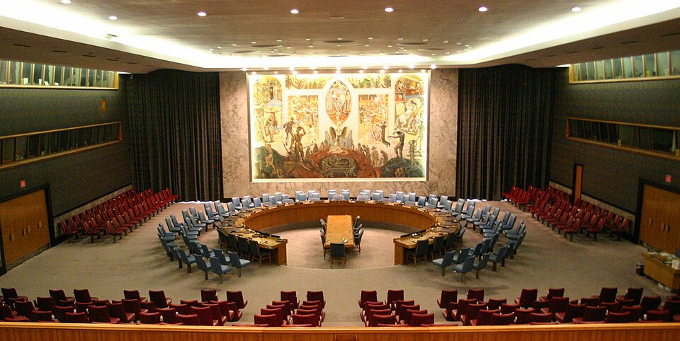

I. Iran's Price: Civilian Life Collapses
The war has dealt a devastating blow to Iran's economy and civilian life. US-Israeli strikes extended well beyond military targets, systematically destroying roads, bridges, ports, oil storage facilities, refineries, desalination plants, hospitals, and schools—the economic and civilian infrastructure of the nation.
Skyrocketing Prices
The rial has plummeted, and the prices of food, medicine, gasoline, and batteries have soared. Flour prices have risen nearly tenfold. The war has accelerated the collapse of an economy already fragile from decades of sanctions.
The purpose of striking infrastructure, in the US and Israel's own words, is to "destroy Iran's basic ability to sustain its population, breaking the people's will to resist." Desalination plants, hospitals, and schools are not military targets—they are the foundations of survival. When flour costs ten times more and the wounded have no hospitals to turn to, that is when the war truly begins for ordinary people.
II. Global Economic Shockwaves
The war's impact on the global economy has far exceeded expectations. The IEA has characterized the Strait of Hormuz disruption as "the largest supply disruption in the history of the global oil market."

Energy Markets
Between March 10 and 20, as Iran intensified strikes on Gulf energy infrastructure, Brent crude surged past $116 per barrel, with natural gas costs rising 24%. A Reuters poll showed analysts making "the largest upward revision to annual oil price forecasts on record."
Supply Chain Disruption
CNBC analysis noted that the Strait of Hormuz blockade affects far more than oil—metals, fertilizers, agricultural products, and other industries reliant on maritime shipping will all be impacted. "A guaranteed global recession" is no longer alarmist rhetoric.
Inflation and Recession Risk
Supply shortages are driving global inflation higher while economic growth slows—the specter of stagflation looms over the global economy. Many economists warn this could be the most severe energy shock since the 1970s oil crisis.
III. Each Side's Leverage
IV. Great Power Positions

China
China has taken a clear stance: advocating respect for national sovereignty, opposing regime change, and calling for a return to the negotiating table. It emphasizes that "the sovereignty, security, and territorial integrity of Iran and all Gulf states must be respected and must not be violated," and that "Middle Eastern affairs should be decided independently by regional nations."
Russia
Russia, itself deeply mired in the Ukraine conflict, has condemned the US position on the Iran crisis, though its actual influence is limited. The energy market turmoil does benefit Russian oil revenues in the short term.
Europe
Europe finds itself in the most awkward position—both an ally of the United States and a direct victim of the energy crisis. British military facilities were even struck by Iranian retaliation.
V. Where Does It Go from Here?
As of April 3, 2026, the war has lasted 35 days. Three possible trajectories:
Multiple analyses suggest that after the failure of the US-Israeli "swift victory" expectation, the conflict is drifting toward a protracted war of attrition. The United States faces midterm election pressure and economic blowback, eroding its resolve for sustained warfare. Iran, despite suffering massive damage, has demonstrated both political resilience and military retaliatory capability—a millennia-old civilization of nearly 90 million people will not surrender easily.
The history of the Middle East has repeatedly taught the world: military force is not the solution; resorting to arms only breeds new hatreds and incubates new crises.
VI. The Numbers That Tell This War's Story
The full picture of this war is still unfolding. Every day brings new strikes, new casualties, new signals of negotiation.
What we can say with certainty: this war has changed the Middle East and is reshaping the world order. Every explosion in the Strait of Hormuz reverberates at every gas station and supermarket on the planet. Every child at the Minab school should never have become a casualty of geopolitical brinkmanship.
When the dust of war finally settles, history will remember all of this. Until then, what we can do is record what is happening as objectively as possible.
This report will be updated continuously.